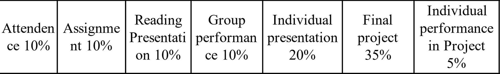

外语类课程
（051F0600）英语水平测试
Note
根据《浙江大学本科生“外语类”课程修读管理办法（2018年4月修订）》，此测试可被小语种四级和小语种水平测试替代，或满足一定条件后申请免测。
- 绝大多数专业的必修学分，从大二开始可以报名，每学期两次（也就是春夏秋冬学期各一次，毕业班实在太多人没过时会组织暑假测试）。每次水测分两次进行，第一次笔试部分考“阅读听力”和“作文”，两部分通过后方可报名口试部分，有一部分不通过可下次单独考这部分。阅读听力一起算分，达到60%的分数通过，作文单独算分。口试则是现场老师直接评定pass/fail。具体题型详见外国语学院通知（需内网）
- 测试每次难度不统一，有的时候难有的时候简单，所以建议对自己英语水平没有自信的尽早报名（个人建议大一下六级一遍到不了550大二就可以开始报了），以免影响毕业。
- 英语确实是靠平时积累，不过临时抱佛脚也不是完全无效，可以参考这个cc98贴，以及改题型之前的cc98贴1，改题型之前的cc98贴2。
- 值得一提的是，这门课的1学分是免费学分，但如果你第一次报名时没过，那么之后就算挂科重修（当然成绩单上不显示）需要交学分费。以及这门课二级制，不算均绩。
（051F0030）大学英语Ⅳ
- 考核方式：口试10%+课堂表现（考勤/课堂参与/听写作业等）5%，quiz2*7.5%，作文（作业2篇+quiz2篇+书评1篇）10%+60%期末考试
- 事多分低的烂课 ，因为平时分老师很难调整，一个班的平均分大约是32/40，期末试卷又很难，平均分在75-80/100，于是平均绩点大约是3.3，英语基础不好的话，会狠狠干碎你。然而为了凑学分你又不能不学。
- 没法缺勤，因为座位固定，上课形式非常传统，就是照着课本上课文，讨论啥的。口试倒不必担心，7分起打。平时的小测要好好准备，作文的书评是交在冰果网站上的（也就是机改），可以借助gpt搞到满分，不过有些老师会再手改一遍。
- 期末复习需要好好课后背单词，这部分分值很高。作文听力啥的大概率是啃高中的老本，或者有毅力的话可以大一整年都狠狠按四六级准备，对大英有帮助，也有助于六级一遍考个高分。
（051F0700）英语语言与社会
- 考核方式：课堂表现及到课5%+作业5%+平时作文5%+5%口头pre+书面报告5%+听力小测5%+20%小测（10分听力，30分作文）+50%期末考试
- 不点名但是在五边棱教室上课，所以可能不太好翘课。作业主要是听力填空练习，交了就行（甚至google可以搜到原文）。口头pre要求脱稿，时长2min，主题要求与生活中的语言现象相关，书面报告主题与pre主题一致。听力小测文段和小测中的听力文段原样选自作业。
- 期末考试是开卷，只允许带教材，题型是30分填空（语段可以在书上找到）+30分判断对错（原句可以在书上找到）+40分作文
- 上述所有的作文（平时作文，小测中的作文，期末考试中的作文）要求大致为：给你一篇文章，先写一篇summary（概要），新高考考生应该都写过，而且词数要求也比较宽（150），再写一篇writing response，就是看过这篇文章之后你写一个与文章相关的观点性文字，需要有例子。
- 虽然看起来很多任务，但课程其实很轻松的，毕竟期末考核压力没有大英那么大。但是期末考试虽然开卷，从近百页的课本中找出对应的句子并不是很简单的任务，建议至少每篇课文上完都把文章仔细看一遍，一些观点性的句子和术语解释做做标记（容易在这里出题），不认识的词标个中文，以免考试前对着99新的全英文课本一脸懵。考前也需要把各篇选文的大致意思浏览一下。但只要考试的时候能都找到，总分就不会低了。
（381F0040）译读中国文学
- 考核方式如图：
因为这个评分表老师在上课的时候没说，有课友去问的时候才得知的，所以不完全确定各部分的对应，但所有任务都在下面列出了。
- Assignment 是一篇论文，主题是”中国古典诗词中的女性化倾向“
- Reading Presentation 是老师会给你一段课程内容相关的英语文章，小组合作（课上抽签组成小组，每组五人）把这段文章读懂并做个pre。
- Group Performance 是老师会给一首古诗文，小组合作翻译给出终稿，并做一个简单pre
- Individual Presentation 不知道是啥，推测是Final Project里的pre。
- Final Project 2-3人（很多人选择的都是三人，其实每人的工作量一样的）自由组队（没错，第二次组队），需要选择一些文学性文本进行翻译，文本要求为没被人翻译过的一篇长诗或长文或是有相关性的组诗组文，诗歌每人不少于十五行，现代文每人不少于1000字；写一篇英文commentary，主要内容是你在翻译过程中注意到了哪些平时阅读时不常注意的内容，这些内容对你的翻译有什么影响；对你的翻译内容做一个pre；小组将完成的内容放在一起形成总稿，并一起写一篇中文或英文protfolio，说明你们小组是如何合作更好的完成翻译的。
- 可以看出课程任务是相当多的，然后老师给分主打一个求是，严格按照上述标准给，导致大家分数都不好看。
- 老师讲的好坏不做评价，因为我没咋听。很多文学作品（主要是诗歌）我连原文都没太懂就让我讨论翻译实在难蚌。然后因为老师布置了三拨pre，所以几乎每次课第二节课都是有人在做pre，实际的课程内容其实不太多。
- 不过这门课凑学分还是可以的，论文拼凑一下，reading让gpt翻译一下，总结一下核心思想，final project选个新出版（没被人翻译过）的现代文，gpt跑一遍然后自己校对一下，再用LaTex模板调一下格式，花的时间也没那么多…好吧其实也挺多的。